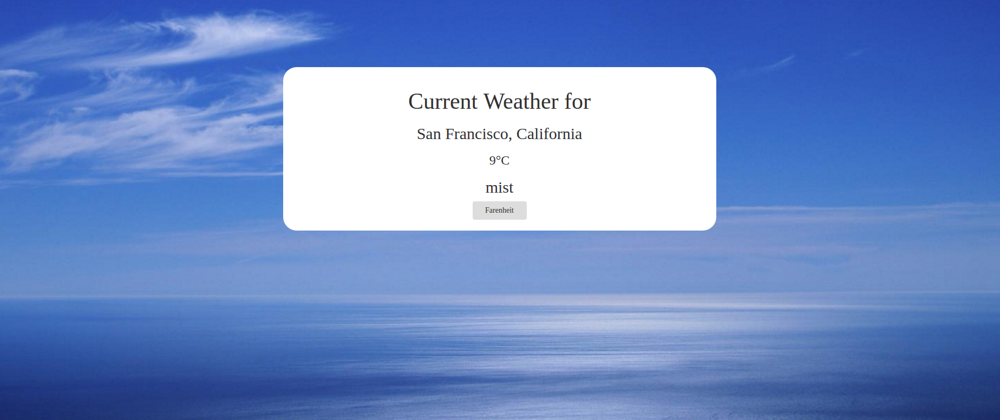

Hello, everyone!
Welcome to my website! My name is Dan, and I'm a linguist turned programmer from Michigan. While attending school, I thought "Hmm..Spanish and Italian are cool, so let's learn some computer languages too!" and a passion was born. Or discovered? At any rate, I hope this website gives you a comprehensive overview of my formal and not-so-formal education.
Education
University of Michigan - Computer Science and Romance Languages > 3.5
Relevant Coursework:
EECS 281 - Algorithms and Data Structures
- Introduction to algorithm analysis and O-notation
- Fundamental data structures including lists, stacks, queues, priority queues, hash tables, binary trees, search trees, balanced trees and graphs
- Searching and sorting algorithms,recursive algorithms, basic graph algorithms, introduction to greedy algorithms and divide and conquer strategy
EECS 484 - Database Management Systems
- How to design a DBMS, store data for real-world scenarios, and develop applications that communicate with the DBMS
- How to analyze data by "asking" appropriate queries and how DBMSs are able to store massive datasets and support efficient query handling.
- The internal design of DBMSs that makes them robust to system failures and supports concurrent data accesses
Languages:
- C++
- Java
- SQL
- Python
- Ruby
- Rails
- HTML
- CSS
- Bootstrap
- Javascript
- jQuery
- Angular
- PHP
Portfolio
Below are some of my Web Dev projects as well as a few other miscellaneous projects I've built without using a guide. Clicking on one will take you to the app with the code for the app listed above using CodePen. Other projects without demos such as a command line version of minesweeper written in Python and a Ruby web scraper can be found at my github. New projects to be added weekly!!
Quote Generator

Presents a random quote every time the user presses the generate button. A tweet button also allows the user to tweet the quote to their twitter account. I used the API from quotesondesign.com, but I've also built a web scraper in Ruby that scrapes the quote of the day.
Weather App
Gets the user's location, displays it on the screen, and then used that information to display the weather for that location. This app makes two different API calls, and the background image dynamically changes depending on the weather. I also built an Android app that accomplishes the same thing.
Wikipedia Viewer
With this app, the user can either click a button and be taken to a random wikipedia page, or they can search for anything their heart desires. This app uses the wikipedia API.
TwitchTV Channel Display

Using this app, the viewer can see current twitch channels that are streaming as well as the content that they are showcasing. The channel names are in a predermined array which can be easily modified to show more or less channels. Channels that are streaming are displayed at the top.
Javascript Calculator

Not much to say about this app...it's a calculator! It can do the four basic operations, and the user can string them together to evaluate more complicated expressions. The buttons also change color. Neat!
Pomodoro Clock
A pomodoro clock is a tool used to increase productivity. The idea is that one sets an amount of time (default 25 minutes) to work on something and then an extra few minutes as a break, and this app does just that. The user can input any time they wish for both the break and the work session.
TicTac2.0

I'm just gonna lay this out there: I think TicTacToe is a dumb game. It can end in a draw, and the person who goes first has a huge advantage. That's why I made an updated version of the game. Good luck against my super smart AI (Hint: it chooses squares at random...)
Simon Says

It's that game you know and love! The game features two modes: normal which uses the same pattern and strict which changes the pattern whenever the player messes up. Getting the sound for the buttons was way easier than I anticipated. Have fun!
CodePlayer

This app allows the user to enter in HTML, CSS, and Javascript and then press a RUN button that then displays there code in a results tab. The tabs and be toggled and are sized accordingly. Getting the tabs to be the correct size was the trickiest part about this app. One of the first apps I ever built!
NPR News Ticker

My first app using AngularJS (and a little Sass thrown in) displays the top news stories from NPR. Getting used to the new framework was the most difficult part, and there are still a few small bugs I need to iron out, but the concept is there.
Mondrian Paint

I saw someone else make this online and decided to do it myself. Using jQuery it was super easy. It was more of an exercise on HTML and CSS than anything as making the canvas was actually the most difficult part, but I'm happy with the way it turned out. Maybe I'll remake this using a js framework in the future.
Disco Square Thing

Yup. I made a thing. Stare into this and contemplate life and its mysteries.
Angular Todo List

I love Angular! Definitely my favorite framework. This project is simple at the moment but I want to add more features like a counter with how many tasks there are and maybe so nice animations.
Angular Minesweeper
A slightly larger angular app of the classic game with cutting edge graphics. The hardest part about this project was getting the correct numbers to display in each square if they were near a mine; the function that did this took a lot of careful tweaking, but I eventually got it working beautifully.
React Interactive List

This is my first ever React.js app. It's a cross between a todo list and a grocery list I suppose. It was more of an exercise on getting started with React, and I followed a guide while making it, but I added more functionality to it after the guide was finished.
(Android) - Movies App
This app displays a list of the currently playing movies and info about them. I was intending to have a new intent launch when clicking on a movie with movie times near the user, but life got in the way and it was placed on the back burner. Maybe in the future though!
(Android) - ToDo List
While searching for a ToDo list app in the Play Store I thought "Wouldn't it be fun to make my own?" And sure enough, an hour later, Sh!t I Gotta Get Done was born! No demo, but clicking on the link will take you to the code for the app. It's pretty simple but was a fun exercise to test my Android and Java skills.